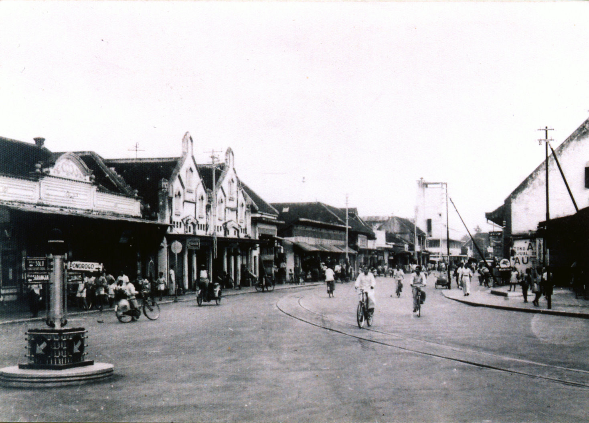
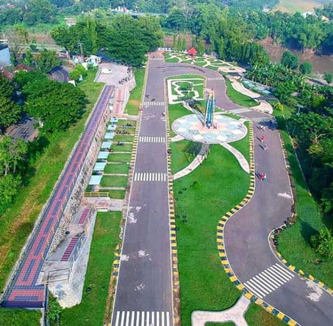

Keindahan Kota Madiun
Nikmati keindahan dan pesona Kota Madiun melalui video cinematic ini.
Sejarah Kota Madiun
Kota Madiun, "Kota Pendekar," dengan sejarah kaya yang membentang dari masa lampau hingga kini...
Tempat Pariwisata di Kota Madiun
Madiun menawarkan tempat wisata menarik yang memukau pengunjung dengan keindahan alam dan budaya...
Kuliner Khas Kota Madiun

Madiun terkenal dengan kuliner khas lezat yang menggugah selera dan memikat hati para pecinta makanan...
Budaya & Tradisi Kota Madiun

Madiun kaya akan budaya dan tradisi unik yang telah diwariskan dari generasi ke generasi...